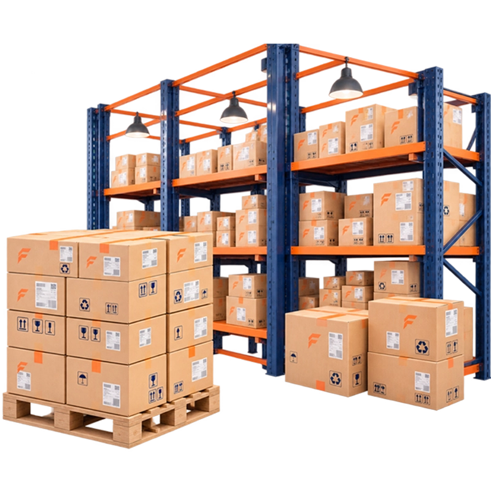

Recover Value From Excess & Obsolete Electronics Inventory
Turn excess, obsolete and slow-moving electronics inventory into an opportunity for value recovery.

The Need for Electronics Inventory Liquidation
Ageing inventory can tie up working capital, consume storage capacity and lose value as products, models and market demand change. Fuevation helps businesses address electronics inventory liquidation as a value-recovery challenge—not simply a disposal exercise.
Our Approach
Fuevation brings a focused solution for electronics inventory liquidation, helping businesses address the commercial, operational and lifecycle challenges associated with their electronics assets—without exposing the proprietary mechanisms behind the service.
Comprehensive Liquidation Pathways
Excess stock
Obsolete inventory
Slow-moving stock
Returned inventory
Damaged inventory
Accessories & spares
Measurable Impact Across Liquidation Programs
Release working capital
Reduce ageing stock exposure
Limit inventory value erosion
Create structured B2B recovery opportunities
Improve surplus-asset visibility
Industries We Serve
Electronics manufacturers
OEM / ODM / EMS
Retail & distribution
Importers & wholesalers
Enterprises
Technology businesses
Related Solutions
Frequently Asked Questions
It is the structured recovery and disposition of excess, obsolete, returned or slow-moving electronics inventory through appropriate commercial and recovery channels.
Devices, accessories, components, returned stock, discontinued products and excess inventory can be considered.
Yes. Even when a product is no longer commercially relevant in its original form, it may retain resale, refurbishment, component or material value.
Inventory is assessed and directed through suitable channels such as resale, refurbishment or B2B recovery.
Yes. Slow-moving stock can be evaluated for appropriate liquidation and value-recovery opportunities.
Yes. Returned inventory can be assessed for resale, refurbishment or other recovery options.
Yes. Damaged stock can be evaluated for recovery through refurbishment, parts recovery or suitable liquidation channels.
Yes. Timely liquidation can help reduce ageing stock and limit further value erosion.
Yes. Excess accessories, components and spare parts can be considered for structured liquidation.
Manufacturers, OEMs, distributors, retailers, importers, wholesalers and technology businesses can use these solutions.
Ready to recover more value from your electronics assets?
Tell us what you are looking to recover, manage or optimize. Our team will help identify the right solution.